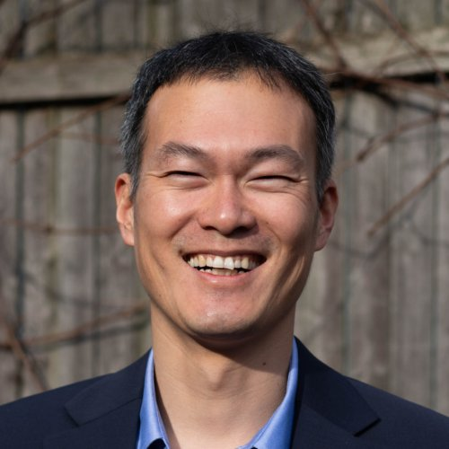
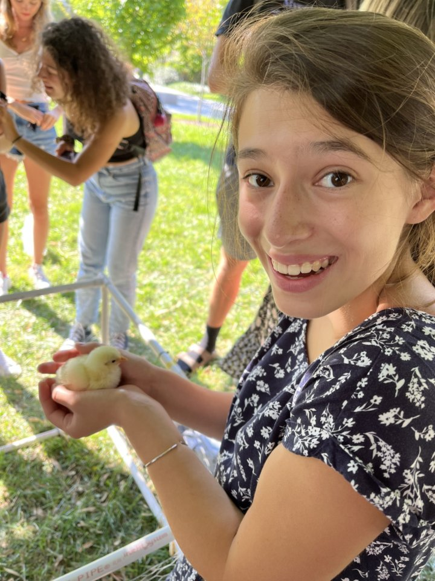
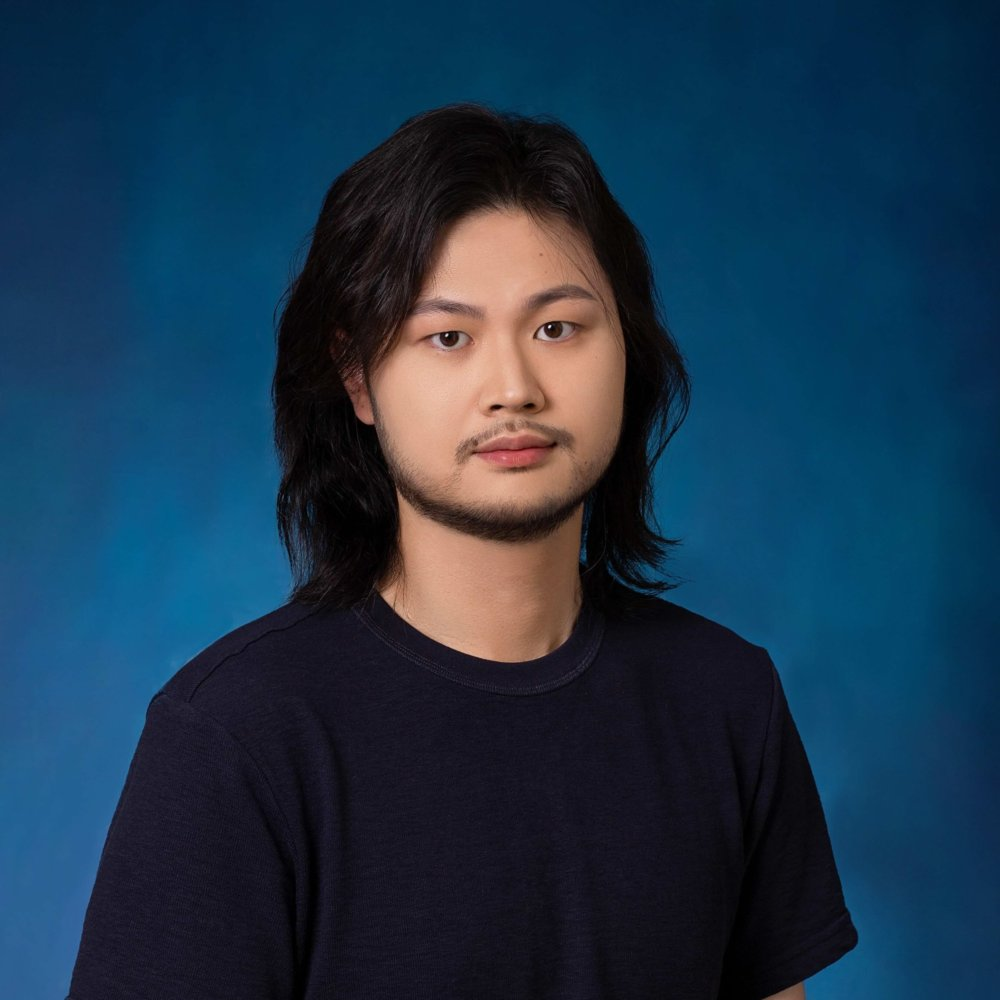
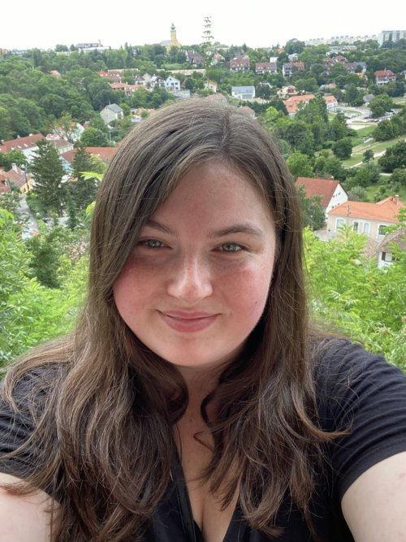
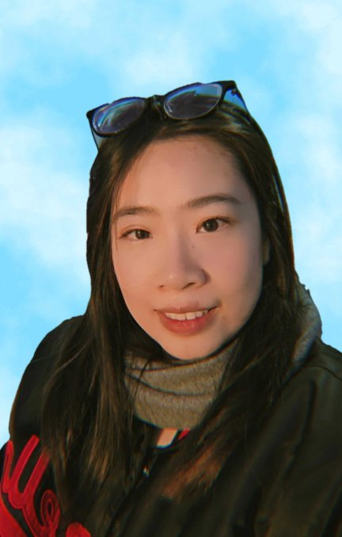
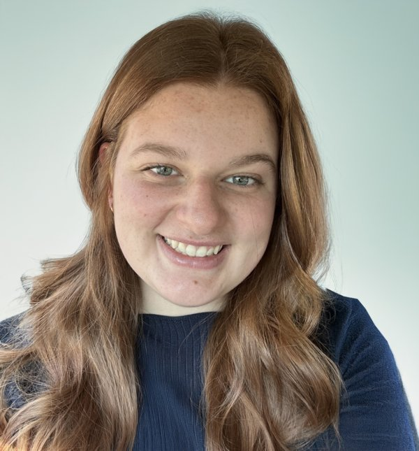
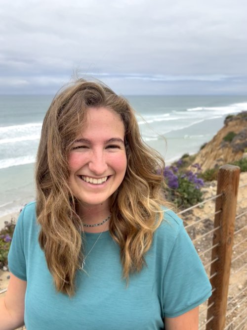
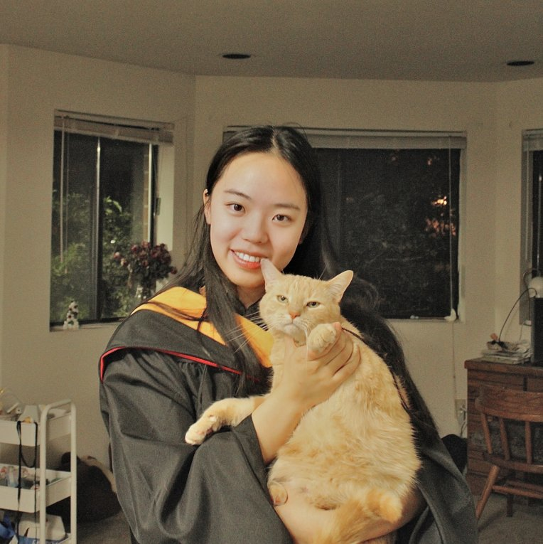

People
Principal investigator
Jongmin Kim, PhD
Assistant Professor, Department of Biomedical Sciences
jk2938 [at] cornell.edu CV
During his PhD, Jongmin identified the function of an uncharacterized gene (he and his advisor named it Kumgang), which was critical for silencing somatic genes during fly spermatogenesis (Kim, ..., Fuller, 2017). After joining a chromatin lab as a postdoc, he continued his work on gene silencing in mouse spermatogenesis, focusing on Polycomb group proteins in modulating chromatin architecture (Kim and Kingston, 2022; Kim, ..., Kingston, 2023). He is excited to investigate how these chromatin-modifying proteins block the misexpression of unwanted genes and safeguard male germ cell fate.
Jongmin is from Korea and came to the US for graduate school. He likes to swim and hike. His recent memorable hike was the "Subway" at Zion. He is looking forward to exploring many trails and gorges around Ithaca.
Research technicians

Erin Brown
Research technician, Department of Biomedical Sciences
esb268 [at] cornell.edu
I obtained my BS with a concentration in Animal Physiology at Cornell University. During my time at Cornell, I worked as a research assistant in the Hendry lab, investigating the distribution of apicomplexan parasites in lizards. After taking a few classes in development and reproduction, I decided that was what I wanted to pursue for my future, and now I am helping set up and organize the Kim lab. Here, I will assist in investigating the functions of the protein Kumgang and CBX7 in spermatogenesis. In the future, I plan to pursue a PhD in developmental biology. In my free time, I enjoy spending time outside, cooking, and caring for my geckos.
Graduate students

Hongjiang Liu
Graduate student, Graduate Field of Biochemistry, Molecular and Cell Biology (BMCB)
hl2522 [at] cornell.edu
Hongjiang is a PhD student in the field of Biochemistry, Molecular and Cell Biology(BMCB). He was born and raised in Chengdu, China, and obtained his B.S. from Nankai University, advised by Xinglu Huang. He spent 1 year as a visiting scholar in the Shen lab at UCSF, where he studied functional genomics in the context of Alzheimer’s disease and contributed to the development of various sequencing methods and tools. He then spent 2 years at Tsinghua, studying epigenetics and transposons. In Kim Lab, his research focuses on chromatin-based gene regulation during spermatogenesis, leveraging advanced tools in functional and computational genomics.

Helen Scanlon
Graduate student (co-advised with Paula Cohen), Graduate Field of Genetics, Genomics, and Development (GGD)
hms267 [at] cornell.edu
Helen is a PhD student in the field of Genetics, Genomics and Development (GGD) co-advised by Dr. Jongmin Kim and Dr. Paula Cohen. Before coming to Cornell, she obtained her B.S. in Biology and Mathematics from Northeastern University in 2024. During undergrad, Helen worked as a research assistant in Dr. Sandeep Robert Datta’s lab at Harvard Medical School, where her research focused on the role of Ms4a6d in the progression of Alzheimer's Disease in mouse models. Her current research focuses on the roles of CBX2 and CBX7, polycomb repressive complex proteins, in mouse spermatogenesis. Outside of the lab, Helen enjoys reading, playing the cello, and exploring Ithaca with her friends.
Rotation students (2025)

Phuong Pham
Graduate student, Graduate Field of Biochemistry, Molecular and Cell Biology (BMCB)
Phuong Pham is a PhD student in the field of Biochemistry, Molecular and Cell Biology. She was born and grew up in Hanoi, Vietnam. Before coming to Cornell, Phuong obtained her B.S. in Biotechnology at Vietnam National University in 2023. During undergrad, she joined Biomed Lab and did research on the epigenetics of repeated DNA sequences in colorectal cancer. Keeping strong interest about this, Phuong continues her graduate study on cancer biology. Outside of the lab, Phuong enjoys swimming and exploring new extreme sports.

Analise Coon
Graduate student, Graduate Field of Biochemistry, Molecular and Cell Biology (BMCB)
Analise is a first-year Ph.D. student in Biochemistry, Molecular, and Cell Biology, and she is excited to rotate in the Kim Lab! She grew up in metro Detroit and earned her B.S. in Molecular and Cell Biology from the University of Wisconsin–Madison in 2025. There, she conducted research in the lab of Dr. Phillip Newmark and Dr. Melanie Issigonis at the Morgridge Institute for Research, where she studied soma–germline interactions in development and regeneration in the flatworm Schmidtea mediterranea. This work sparked her interest in germ cells and reproductive biology, as well as in differentiation and gene regulation, which she hopes to explore further during her graduate studies. Outside of the lab, she enjoys swimming, biking, and playing the viola.

Julia Picker
Graduate student, Graduate Field of Biochemistry, Molecular and Cell Biology (BMCB)
Julia is a first-year graduate student in the field of Biochemistry, Molecular and Cell Biology and is excited to be rotating in the Kim lab! She grew up in San Diego, California and obtained her bachelor’s degree from Dartmouth College in New Hampshire. There, she majored in Cell and Molecular Biology and studied the Wnt signaling pathway in Drosophila Melanogaster. Outside of the lab, she enjoys singing jazz and playing the trombone. She also loves hiking and exploring the outdoors.
Alumni

Jingzhi Zhang
Research technician, 2024-2025
Jingzhi was a research technician in the Kim lab at 2024-2025, working on the role of CBX7 in spermatogenesis. She is currently a PhD student in Center of Life Science PhD program at Peking University in Beijing, China (with Dr. Xiaoliang Sunney Xie).
Contact: Jongmin Kim